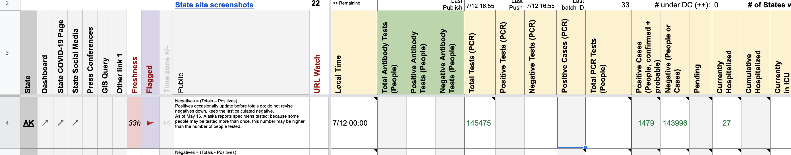
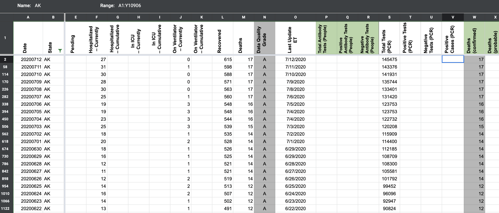
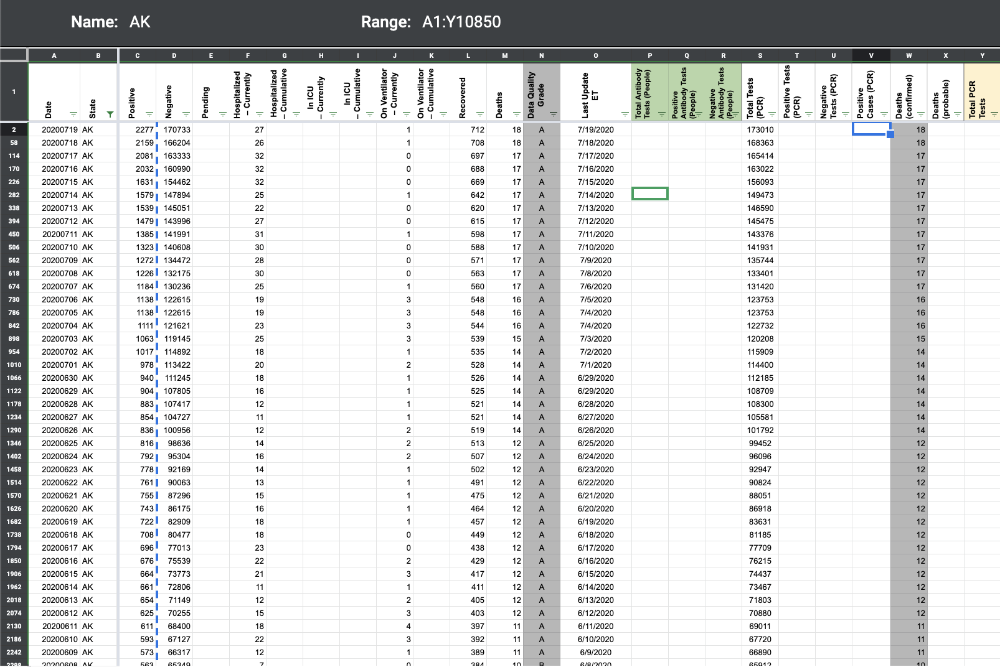
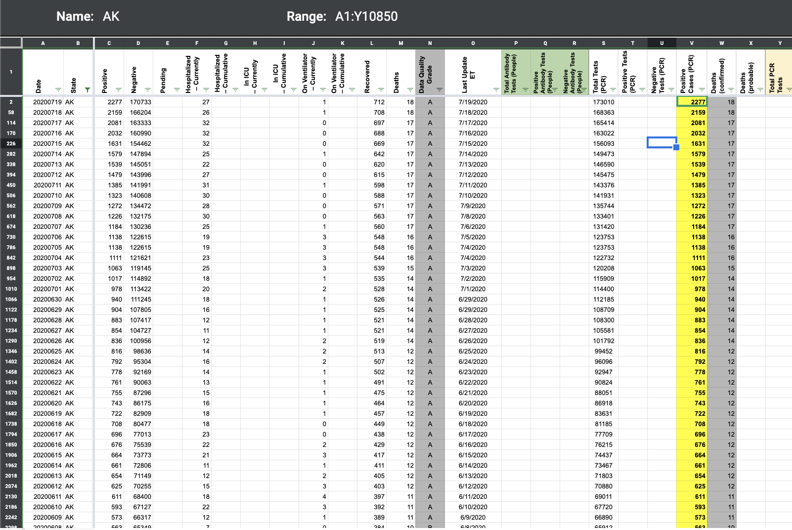

[AK] PCL Cases Historicals
Issue number 611
pscsharon opened this issue on July 13, 2020 at 6:44 am
Alaska has been reporting Confirmed Cases. Please backfill the Confirmed Cases.
Background:
In WS2, we do not populate “Positive Cases (PCR)” which feeds column V in States’ Daily. 
So, column V in States’ Daily is blank. 
It appears we said cases were unclear if they are distinct or lumped. From re-review of their testing guidance on arcgis, I believe now it is lab-confirmed. Refer to questions 1 in this linked PDF. https://coronavirus-response-alaska-dhss.hub.arcgis.com/datasets/cases-and-testing-frequently-asked-questions
pscsharon added the label PCL/SVP Historicals on July 13, 2020 at 6:44 am
pscsharon added the label Backfill on July 13, 2020 at 6:44 am
space-buzzer added the label Missing Data on July 14, 2020 at 10:49 am
brianskli closed the issue on July 20, 2020 at 7:05 am
AK confirmed to report only lab-confirmed cases. WS2 pop-ups was also modified to account for this.
States daily corrected, values in C also added to V.
Before:  After: 